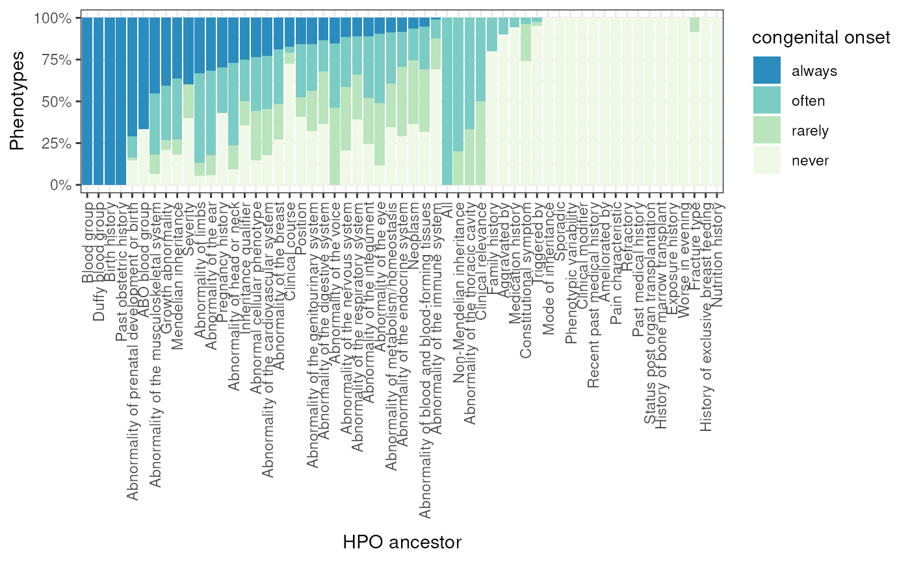

Plot annotations from GPT by ancestral HPO branch.
gpt_annot_plot_branches(
hpo = get_hpo(),
gpt_annot = gpt_annot_read(hpo = hpo),
keep_descendants = NULL,
keep_ont_levels = NULL,
metric = "congenital_onset",
fill_lab = gsub("_", " ", metric),
show_plot = TRUE
)Human Phenotype Ontology object, loaded from get_ontology.
Output from gpt_annot_read.
Terms whose descendants should be kept
(including themselves).
Set to NULL (default) to skip this filtering step.
Only keep phenotypes at certain absolute ontology levels to keep. See add_ont_lvl for details.
Annotation metric to plot.
Fill label in legend.
Show the plot.
Named list of plot and data.
out <- gpt_annot_plot_branches()
#> Translating ontology terms to ids.
#> Reading cached RDS file: phenotype_to_genes.txt
#> + Version: v2024-12-12
#> 383 phenotypes do not have matching HPO IDs.
#> Reading in GPT annotations for 16,753 phenotypes.
#> Adding level-2 ancestor to each HPO ID.
#> Adding ancestor metadata.
#> Ancestor metadata already present. Use force_new=TRUE to overwrite.
#> 17,611 associations remain after filtering.
#> Getting absolute ontology level for 19,025 IDs.
